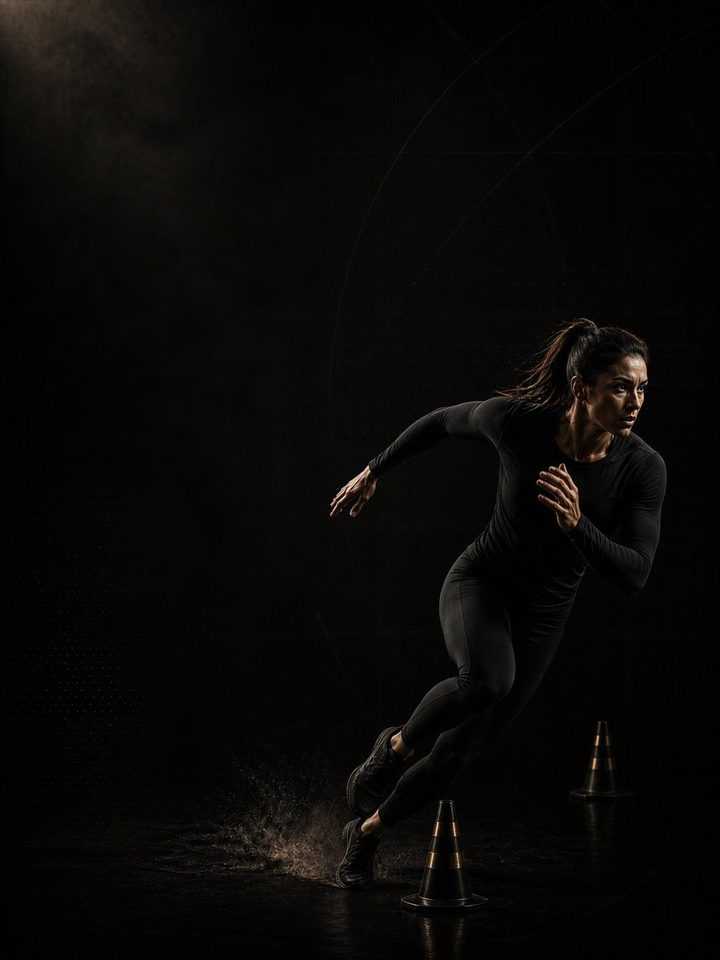
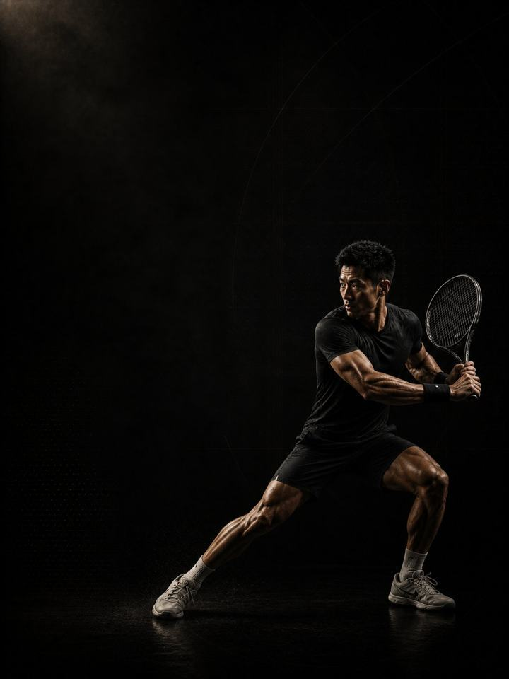
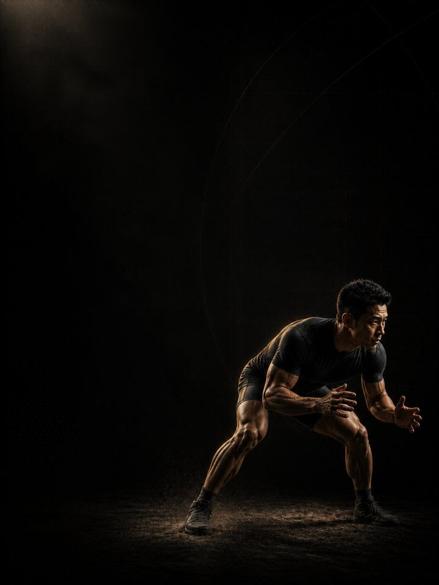
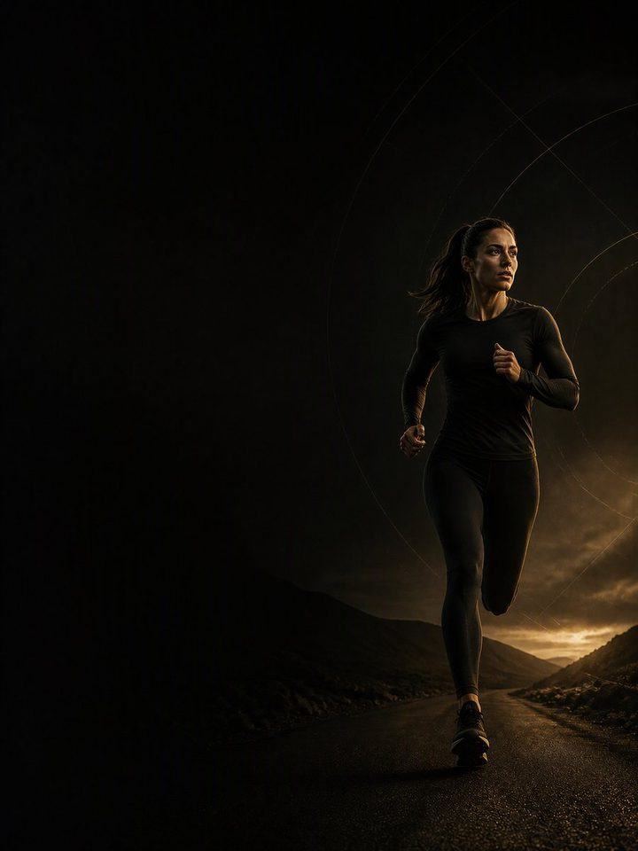

مكتبة البرامج
يصلك كل برنامج بنسخة للهاتف ونسخة للطباعة. الأسعار بالدينار الكويتي.
الباقات
باقة سنة الأداء
المراحل الأربع لبرنامج رياضة واحدة (مثل كرة القدم أو البادل أو الملاكمة): الأساس، البناء، المنافسة، الاستشفاء. 48 أسبوعًا تتبع موسمك من فترة الإعداد حتى التعافي.
السعر المشطوب هو المجموع عند الشراء منفصلة.
اسأل على إنستغرامإضافة برنامج تصحيحي
عالج ما يؤلمك ثم ابنِ عليه. أضف أي برنامج تصحيحي إلى برنامج من 12 أسبوعًا بـ 15.000 د.ك بدلًا من 24.990.
السعر المشطوب هو سعر البرنامج التصحيحي منفردًا.
اسأل على إنستغرامالتصحيحية
لمنطقة تؤلمك أو تتيبّس أو تتكرر إصابتها. تفحص خمسة أنماط شائعة، ثم تقوّي ما هو ضعيف فعلًا.
آلام الكاحل والقدم
استعِد مدى حركة الكاحل، وأعِد بناء قدرة السمانة والقدم، وأعِد تدريب التوازن الذي يسلبه الالتواء.
6 أسابيع24.990 د.كاشترِالميلان الأمامي للحوض
ضع القفص الصدري فوق الحوض على خط واحد، بإطالة الجهة الأمامية من الجسم وبناء الجهة الخلفية.
6 أسابيع24.990 د.كاشترِآلام المرفق والرسغ
أعِد بناء قدرة الأوتار في المرفق والرسغ بدلًا من محاولة التخلّص من الألم بالراحة.
6 أسابيع24.990 د.كاشترِآلام الورك والفخذ الداخلي
ابنِ قوة الورك في كل الاتجاهات، وامنح المفصل المساحة التي يحتاجها لاستخدامها.
6 أسابيع24.990 د.كاشترِآلام الركبة
أعِد بناء قدرة الركبة على تحمّل الحمل، وعالج الورك والكاحل اللذين يستمران في تحميلها فوق طاقتها.
6 أسابيع24.990 د.كاشترِالميلان الجانبي للحوض
اجعل الحوض مستويًا ببناء الجهة التي تتراخى، وتخفيف الحمل عن الجهة التي تعوّض.
6 أسابيع24.990 د.كاشترِآلام أسفل الظهر
خفّف الأعراض، واستعِد تثبيت الجذع، وأعِد بناء قوة الورك والجذع التي تحمي العمود الفقري.
6 أسابيع24.990 د.كاشترِ- 24.990 د.كاشترِ
- 24.990 د.كاشترِ


الأساسيات
نقطة البداية لمعظم الناس. قوة ولياقة رياضية عامة دون ارتباط برياضة معيّنة.
القوة الأساسية
ابنِ الأساس: القوة والكتلة العضلية وجودة الحركة التي يقوم عليها كل ما بعدها.
12 أسبوعًا39.990 د.كاشترِالتطوير الرياضي
ابنِ قوة الرياضي وقدرته الانفجارية ومتانته، دون أن تحتاج إلى رياضة تتدرّب من أجلها.
12 أسبوعًا39.990 د.كاشترِ
الأداء الرياضي
سنة تدريبية كاملة لرياضتك، من كرة القدم والبادل إلى الملاكمة والجوجيتسو والجري: الأساس، البناء، المنافسة، الاستشفاء.
اختر برنامج رياضتك. لكل برنامج أربع مراحل من 12 أسبوعًا تتبع موسمك: الأساس خارج الموسم، البناء مع اقتراب الموسم، المنافسة أثناء اللعب، والاستشفاء بعد نهايته. اشترِ مرحلة واحدة كل مرة، أو المراحل الأربع كسنة تدريبية بـ 139.990 د.ك بدلًا من 189.960 د.ك.

4 مراحل · 12 أسبوعًا لكل مرحلةالحركة متعددة الاتجاهات
العدو والتوقف وتغيير الاتجاه في كل الاتجاهات. تناسب كرة القدم، السلة، اليد، الطائرة، الرجبي.من 39.990 د.كاعرض المراحل الأربع
الأساس
ابنِ القوة وقدرة الأنسجة التي سيستهلكها موسم الملعب القادم.
49.990 د.كاشترِالبناء
حوّل الأساس إلى تسارع وكبح وتغيير اتجاه تصمد كلها في الدقائق العشرين الأخيرة.
49.990 د.كاشترِالمنافسة
احتفظ بالقوة التي بنيتها بينما يحاول الموسم أن يستعيدها منك.
49.990 د.كاشترِالاستشفاء
أصلِح ما كلّفك إياه الموسم، ثم أعِد بناء الأساس للسنة القادمة.
39.990 د.كاشترِالمراحل الأربع
الأساس والبناء والمنافسة والاستشفاء بالترتيب: 48 أسبوعًا تغطي موسمًا كاملًا.
189.960139.990 د.كاشترِ السنة

4 مراحل · 12 أسبوعًا لكل مرحلةالرياضات الدورانية
دوران سريع وقوي من الورك والجذع. تناسب البادل، التنس، الإسكواش، الريشة، البيسبول.من 39.990 د.كاعرض المراحل الأربع
الأساس
ابنِ الكتف والجذع والساقين التي سيستهلكها موسم المضرب القادم.
49.990 د.كاشترِالبناء
حوّل الأساس إلى سرعة في الملعب، وطعن متكرّر، وضربة ما زالت تحمل القوة في الشوط الثالث.
49.990 د.كاشترِالمنافسة
حافظ على الكتف والطعنة معًا طوال موسم من المباريات.
49.990 د.كاشترِالاستشفاء
امنح الكتف والمرفق تعافيًا حقيقيًا، ثم أعِد بناء الرياضي بالكامل للسنة القادمة.
39.990 د.كاشترِالمراحل الأربع
الأساس والبناء والمنافسة والاستشفاء بالترتيب: 48 أسبوعًا تغطي موسمًا كاملًا.
189.960139.990 د.كاشترِ السنة

4 مراحل · 12 أسبوعًا لكل مرحلةالمصارعة والجوجيتسو
قوة السحب والقبضة والتثبيت طوال النزال. تناسب الجوجيتسو، المصارعة، الجودو، السامبو، الفنون القتالية المختلطة.من 39.990 د.كاعرض المراحل الأربع
الأساس
عمل قوة ثقيل وقصير يبني القبضة والرقبة والجذع التي يستنزفها البساط باستمرار.
49.990 د.كاشترِالبناء
حوّل القوة التي بنيتها في كتلة الأساس إلى قوة تنتجها مرة بعد مرة، بعد أن تنفد قبضتك وينقطع نفَسك.
49.990 د.كاشترِالمنافسة
يومان قصيران في النادي أسبوعيًا يحافظان على قوتك طوال المعسكر، ثم تخفيف حقيقي قبل المنافسة لتصل مرتاحًا.
49.990 د.كاشترِالاستشفاء
امنح الرقبة والكتفين والمفاصل فرصة التعافي بعد الموسم، ثم أعِد بناء الرياضي من تحتها.
39.990 د.كاشترِالمراحل الأربع
الأساس والبناء والمنافسة والاستشفاء بالترتيب: 48 أسبوعًا تغطي موسمًا كاملًا.
189.960139.990 د.كاشترِ السنة
 4 مراحل · 12 أسبوعًا لكل مرحلة
4 مراحل · 12 أسبوعًا لكل مرحلةرياضات الضرب
لكمات وركلات سريعة ومتكررة من جذع ورقبة قويين. تناسب الملاكمة، المواي تاي، الكيك بوكسينغ، الكاراتيه، التايكوندو.من 39.990 د.كاعرض المراحل الأربع
الأساس
ابنِ القوة التي تقف خلف الضربة، والكتفين والسمانتين والرقبة التي تحمل الجولة.
49.990 د.كاشترِالبناء
أثقل قوة في سنتك، تتحوّل إلى أسرع يدين وقدمين امتلكتهما.
49.990 د.كاشترِالمنافسة
حافظ على القوة والقدرة الانفجارية التي يحاول المعسكر أن يأخذها، وادخل ليلة النزال وهما معك كاملتين.
49.990 د.كاشترِالاستشفاء
استراحة حقيقية بعد النزال، ثم إعادة بناء متأنية للكتفين والسمانتين واليدين والرقبة التي أنهكها المعسكر.
39.990 د.كاشترِالمراحل الأربع
الأساس والبناء والمنافسة والاستشفاء بالترتيب: 48 أسبوعًا تغطي موسمًا كاملًا.
189.960139.990 د.كاشترِ السنة
 4 مراحل · 12 أسبوعًا لكل مرحلة
4 مراحل · 12 أسبوعًا لكل مرحلةالسرعة الخطية
السرعة والقوة في خط مستقيم. تناسب العدو، كرة القدم الأمريكية، الرجبي، الكريكيت، ألعاب القوى.من 39.990 د.كاعرض المراحل الأربع
الأساس
العَدْو لا يُصيب الرياضيين. العَدْو بجسم غير مستعدّ هو الذي يُصيبهم.
49.990 د.كاشترِالبناء
لا يُبنى أقصى سرعة إلا بالجري بأقصى سرعة. الفرق في أن تفعل ذلك بطريقة يتحمّلها جسمك.
49.990 د.كاشترِالمنافسة
لا شيء تفعله داخل الموسم يجعلك أسرع. وكثير منه يجعلك متعبًا.
49.990 د.كاشترِالاستشفاء
الأوتار تحفظ الحساب طوال الموسم. وهذه هي الكتلة التي يُسدَّد فيها الدين.
39.990 د.كاشترِالمراحل الأربع
الأساس والبناء والمنافسة والاستشفاء بالترتيب: 48 أسبوعًا تغطي موسمًا كاملًا.
189.960139.990 د.كاشترِ السنة

4 مراحل · 12 أسبوعًا لكل مرحلةالتحمل
قوة تجعل كل خطوة وضربة ودورة أقل جهدًا. تناسب الجري، الدراجات، الترايثلون، السباحة، هايروكس.من 39.990 د.كاعرض المراحل الأربع
الأساس
نادرًا ما يفشل المحرّك أولًا. الأنسجة هي التي تفشل.
49.990 د.كاشترِالبناء
القوة تمنحك القدرة على إنتاج القوة. والصلابة تعيدها إليك مجانًا.
49.990 د.كاشترِالمنافسة
القوة تتلاشى أسرع مما تظن. والحفاظ عليها لا يكلّف شيئًا تقريبًا.
49.990 د.كاشترِالاستشفاء
أسبوعان من الراحة لا يكلّفانك شيئًا تقريبًا. والتسابق متعبًا طوال الشتاء يكلّفك موسمًا.
39.990 د.كاشترِالمراحل الأربع
الأساس والبناء والمنافسة والاستشفاء بالترتيب: 48 أسبوعًا تغطي موسمًا كاملًا.
189.960139.990 د.كاشترِ السنة
بناء الجسم
تقسيمات لبناء العضلات حسب عدد الأيام المتاحة لك، من 3 إلى 6 أيام.
الجسم الكامل
ابنِ العضلات في ثلاثة أيام أسبوعيًا، مع تدريب كل مجموعة عضلية رئيسية مرتين إلى ثلاث مرات في الأسبوع.
12 أسبوعًا · 3 أيام في الأسبوع44.990 د.كاشترِعلوي / سفلي
ابنِ العضلات في أربعة أيام أسبوعيًا، مع تقسيم الجسم إلى نصفين وتمرين كل عضلة مرتين.
12 أسبوعًا · 4 أيام في الأسبوع44.990 د.كاشترِدفع/سحب/أرجل + علوي/سفلي
ابنِ العضلات في خمسة أيام أسبوعيًا: دفع وسحب وأرجل أولًا، ثم يوم علوي ويوم سفلي لتتمرّن كل عضلة مرتين.
12 أسبوعًا · 5 أيام في الأسبوع44.990 د.كاشترِتقسيم العضلات
أسبوع تقسيم العضلات التقليدي، أُعيد بناؤه بجلسات ثانية داخل التقسيم نفسه.
12 أسبوعًا · 5 أيام في الأسبوع44.990 د.كاشترِدفع / سحب / أرجل
ابنِ العضلات في ستة أيام أسبوعيًا، مع تمرين كل عضلة مرتين وهي في كامل نشاطها، وبلا جلسة تتجاوز الساعة.
12 أسبوعًا · 6 أيام في الأسبوع44.990 د.كاشترِتركيز الأرداف · 4 أيام
تقسيم علوي / سفلي في أربعة أيام، مع إعادة بناء يومي الجزء السفلي كليهما لتأتي الأرداف أولًا.
12 أسبوعًا · 4 أيام في الأسبوع44.990 د.كاشترِتركيز الأرداف · 3 أيام
برنامج الجسم الكامل في ثلاثة أيام، مع نقل الأرداف إلى مقدّمة الأسبوع.
12 أسبوعًا · 3 أيام في الأسبوع44.990 د.كاشترِ


العودة إلى الرياضة
للمرحلة الأخيرة من العودة إلى رياضتك بعد الإصابة، بعد انتهاء العلاج الطبيعي. لا تنتقل إلى المرحلة التالية إلا إذا اجتزت الاختبارات.
ما بعد جراحة الرباط الصليبي
المرحلة الأخيرة من العودة إلى الرياضة بعد جراحة الرباط الصليبي، مع اختبارات يجب أن تجتازها قبل كل خطوة.
12 أسبوعًا · 4 أيام في الأسبوع49.990 د.كاشترِما بعد خلع الكتف
ابنِ كتفًا تثق به من جديد، مع اختبارات يجب أن تجتازها قبل كل خطوة.
12 أسبوعًا · 3 أيام في الأسبوع49.990 د.كاشترِما بعد شدّ العضلة الخلفية للفخذ
العودة إلى السرعة القصوى بعد شدّ العضلة الخلفية للفخذ، دون تمزق ثانٍ.
6 أسابيع · 4 أيام في الأسبوع29.990 د.كاشترِ